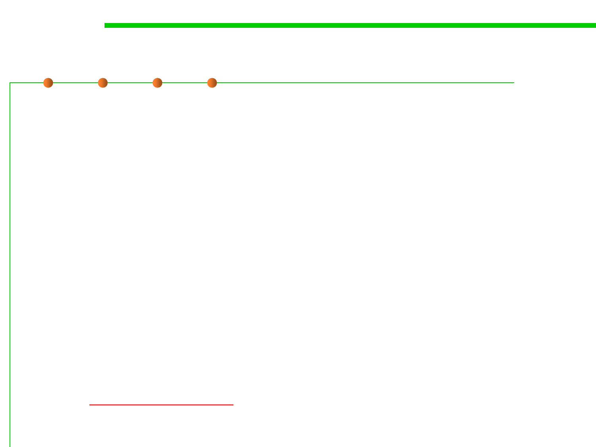

2.2 Process, Systems, and Tools of Software Construction
Build Java project in Eclipse
▪ Eclipse IDE provides a complete set of development tools for code
editing, compilation, version control, testing, and tracking of tasks.
▪ The build functionality in Eclipse is just one part of the wider
toolset, the compilation happens behind the scenes, and you don’t
even know it’s taking place, Eclipse GUI makes the build work
together seamlessly.
▪ You don’t write a build description file (such as a makefile): Eclipse
already knows enough about the structure of the software.
▪ Relying on the GUI to provide the build functionality makes
constructing a build system easy but also limits the set of available
features.
▪ Read Chapter 10 Eclipse of the textbook “Software Build Systems:
Principles and Experience”.